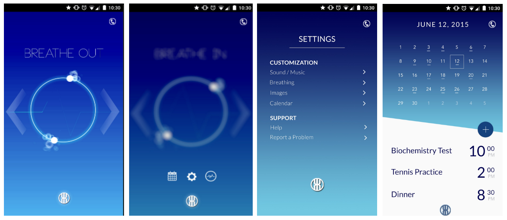

PANIC ATTACK APP
Panic Attack is an app idea whose purpose is to help calm users in the midst of a panic attack. For this project, we created a prototype for the app and focused primarily on the user interface and incorporating important design principles.
PROJECT OVERVIEW
Q. How long?
A. 2 months
Q. With whom?
A. Team of 5
Q. Using what?
A. Axure, Photoshop, After Effects
USERS
Users of the app would primarily be those suffering from both recurring and unexpected panic attacks--whether due to phobias, post-traumatic stress disorders, or other psychological disorders.
TASK ANALYSIS
Upon launching the app for the first time, the user will be prompted to select from a library of soothing interfaces and sounds. These preferences will be saved and remembered for the next time the user opens the app, but the user can also go back into the settings to change them any time. There will also be a calendar feature integrated into the app to encourage users to practice their breathing exercises daily. The user will have a timer on the home screen that they can set to determine how long they want to practice their breathing. Then the user will need to check a box on the calendar to record that they have completed the exercise. If the user fails to complete these exercises by a certain time, push notifications will be sent to their phones. The user will be able to turn on and off these notifications in the setting.
INITIAL DESIGNS
Design 1:
This design focuses on clear cut and concise access to the different elements of the application, as well as sticking to conventional design choices. The advantages of this design lay in readability and quickness of use. Each of the features of the app have their own screen, linked by the main menu.
Main Screen:
The main navigational page. Through this screen one can get to the four main functions--the deep breathing feature, the calendar, the help section, and the settings section.
Deep Breathing:
This feature’s purpose is to calm down the user during a panic attack. An expanding and contracting circle is displayed, meant for the user to try and match so that they can focus on breathing deeply and rhythmically so as to calm them down.
Calendar:
This feature’s purpose is up to the user to implement and use should they wish to keep track of their panic history. One can mark down past panic attacks on the calendar to see how often they are beset by them.
Design 2:
This design focuses on an interactive and responsive deep breathing feature. By using the light sensor that comes with many modern smartphones, one’s heartbeat can be relayed to the device. This information allows for many things, among which lies an implementation for responsive deep breathing. When experiencing a panic attack, all one needs to do is open the app and cover the front facing camera. By using the sensor’s information, the user’s heartbeat can be determined, and the deep breathing feature will adjust accordingly. By providing a calming visual and auditory response to the user’s heart rate, deep breathing can be custom tailored so that its effectiveness on a mobile device can be pushed to its limits.
Design 3:
This design is a departure from the previous designs and also a unique branch off from Design 2 in that its UI is minimized to affordances. There is one feature and one feature only - a 3D rendered environment that can be alternated between many that moves in a rhythmic fashion meant to help with breathing and emotional stability. These scenes would be taken from nature and their movement would coincide with the timing patterns found in most deep breathing apps. For instance, in the shown screens, the grass would sway, the water would ripple, and the clouds would move all in accordance to deep breathing timings. The intended effect of this design would be to calm the user down as quickly as possible - on first open, the main feature (the 3D environment) is displayed. There are visual affordances on the left and right side of the screen allowing the user to swipe between different scenes.
FINAL DESIGN
Our final design was a combination of the first two design alternatives. Our first design alternative was a conventional app design, with an initial menu screen that would take the user to the different features. Of the design alternatives, it was the one with the most utility, giving it more power than the other designs. Our second design alternative focused on the deep breathing functionality of the application, featuring an expanding and contracting circle along with a heart rate detector that allowed for responsive deep breathing. The last design alternative featured a 3D animated environment with the purpose of being a calming and immersive environment - however, due to constraints in our own technical skill and time, we were not able to implement the third design.
The final design that we came up with combined the strengths of the first two designs. Instead of an initial menu screen, which was the weakness of the first design, we instead feature the deep breathing function on immediate opening. Taking into account the strengths of the first design, we also implemented the calendar feature, a settings feature, and an emergency phone call function. Rather than have the menu take up the first screen, we implemented it as a slide out button on the button to allow for quick access. At the top right of the screen is the call functionality, which immediately calls 911 - we put this feature outside of the menu for immediate access.
